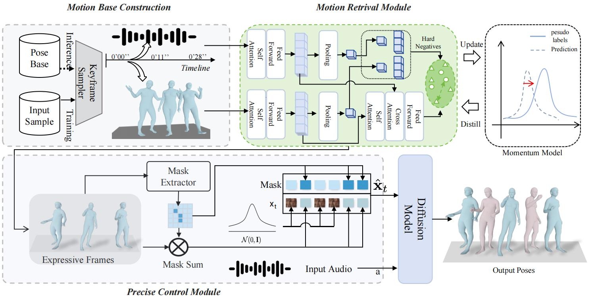

ExGes — Full Method & Results Overview
▶ Main Video
† Corresponding Author · Renmin University of China & Kuaishou Technology
Audio-driven human gesture synthesis is a crucial task with broad applications in virtual avatars, human-computer interaction, and creative content generation. Despite notable progress, existing methods often produce gestures that are coarse, lack expressiveness, and fail to fully align with audio semantics.
To address these challenges, we propose ExGes, a novel retrieval-enhanced diffusion framework with three key designs: (1) a Motion Base Construction, which builds a gesture library using the training dataset; (2) a Motion Retrieval Module, employing contrastive learning and momentum distillation for fine-grained reference pose retrieval; and (3) a Precision Control Module, integrating partial masking and stochastic masking to enable flexible and fine-grained control.
Experimental evaluations on BEAT2 demonstrate that ExGes reduces Fréchet Gesture Distance by 6.2% and improves motion diversity by 5.3% over EMAGE, with user studies revealing a 71.3% preference for its naturalness and semantic relevance. Code will be released upon acceptance.

@article{zhou2025exges, title = {ExGes: Expressive Human Motion Retrieval and Modulation for Audio-Driven Gesture Synthesis}, author = {Zhou, Xukun and Li, Fengxin and Chen, Ming and Zhou, Yan and Wan, Pengfei and Zhang, Di and Jin, Yeying and Fan, Zhaoxin and Liu, Hongyan and He, Jun}, journal = {arXiv preprint}, year = {2025} }